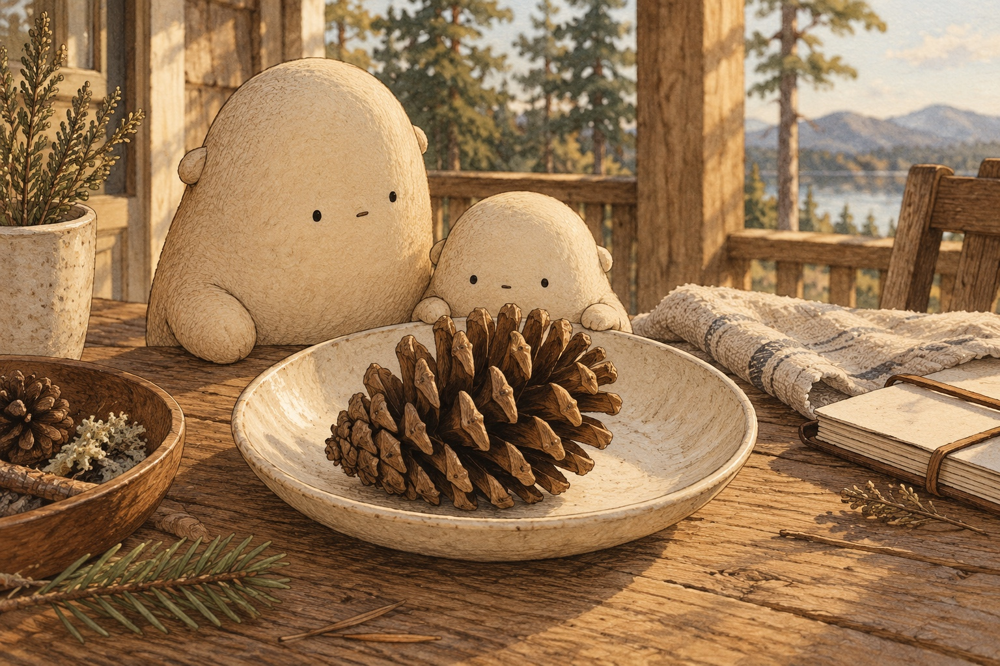
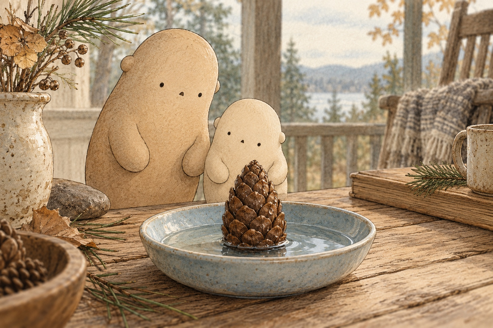
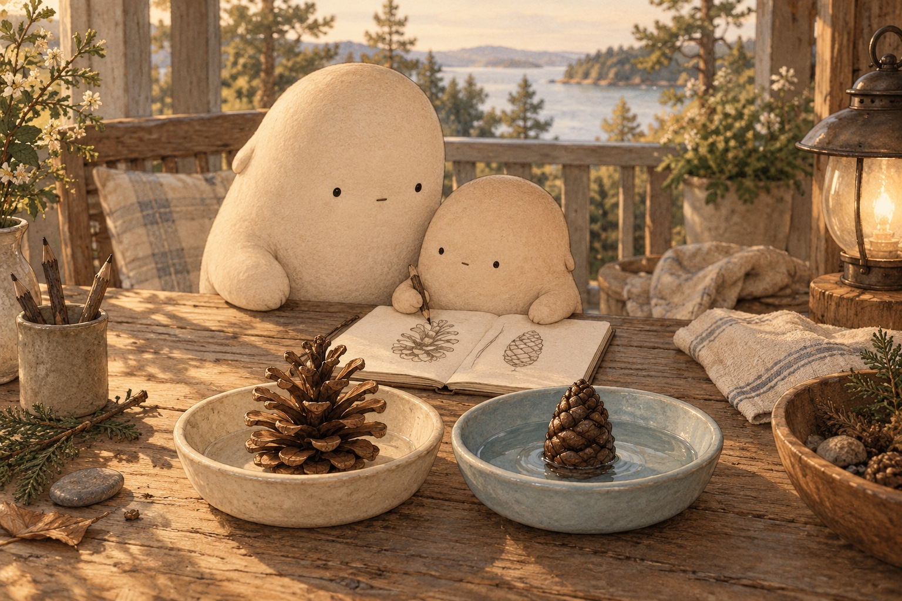
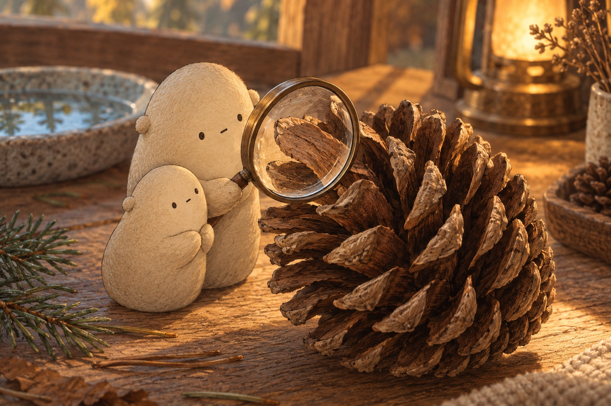
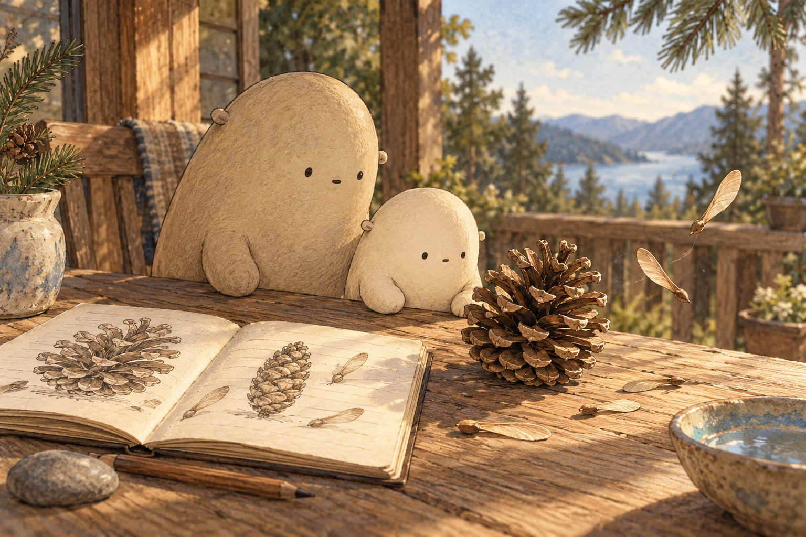

The cone that changed its shape
A woody spiral
Little Wonderer set a fallen pinecone on the porch table. It felt woody, but it was not a piece of bark. “A pinecone is a seed case,” said Big Wonderer. Its many parts are called scales. They overlap in a spiral, winding around the cone. Little followed the spiral with a curious gaze.
How are the scales arranged?

Room between scales
The dry cone had gaps between its scales. Dry means there is little moisture, or water, around it. The scales spread outward like small shelves. Seeds could slip through the spaces. Little drew the wide shape. Would the cone stay open if the air changed?
How could a seed leave the dry cone?

A cone closes
Big placed another cone in a shallow dish of water. Over time, its scales curled closer together. Wet scales take in a little water and bend inward. Humid air has water in it too. Little checked the drawing again. The cone had become narrower without anyone squeezing it.
What changed as the cone became wet?

Two dishes, one clue
One dish stayed dry. The other held the damp cone. Little sketched both shapes in a notebook: open and closed. “Let’s give the damp one time to dry,” said Big. They left it on a dry dish. Later, spaces began to appear between its scales again.
What would make the two-dish test a fair comparison?

Water bends the scales
Little leaned toward the magnifier. A scale was made of plant tissue, the material that makes up plant parts. Different parts of that tissue take in water differently. That makes the scale bend. The fallen cone needed no muscles to move. Water in, water out: its shape could change.
What makes a scale bend without muscles?

A day for seeds
A winged seed rested beside the open cone. Its thin wing could catch a breeze. Wet seeds can cling instead of drifting. “Why would a tree open its cones only when the air is dry?” Little wondered. Their two drawings held a clue.
Why might dry weather help a winged seed travel?
For a complete still story, download the foldable book.
Pinecones
Why would a tree open its cones only when the air is dry?
Where shall we look?
What is a pinecone made of?
Follow a spiral around the cone.
A little explanation & something to try
A pinecone is a woody seed case with many overlapping parts called scales. Seeds grow tucked beside the scales. The scales wind around the cone in spirals.
Try this. Count the scales you can see on one side, then draw one spiral.
Why are there gaps in a dry cone?
Look between the spread-out scales.
A little explanation & something to try
When many common pinecones dry, their scales bend outward. The open spaces let ripe seeds leave. A light wing helps many pine seeds catch the breeze.
Try this. Set a dry cone on a dish and sketch its outline. Leave room beside your drawing for a second shape.
What changes when a cone gets wet?
Compare the close scales with your open-cone drawing.
A little explanation & something to try
Wet or humid conditions add water to the scales. Parts of each scale take in water differently, so the woody tissue bends inward. The cone closes. A fallen cone can still do this without muscles.
Try this. Use two fallen cones or cones from a craft bin. Put one in a dry dish and briefly wet the other in a shallow dish of water. With Big beside you, check their scales over time and draw both shapes. Collect fallen brown cones with Big nearby; leave green cones on branches, keep feet on the ground, and wash hands afterward.
Why wait for dry air?
Find the thin wing beside a seed.
A little explanation & something to try
Winged seeds can drift on a dry breeze. When wet, they can cling to a scale instead. Closing in damp weather helps keep seeds inside until conditions are better for leaving. Different kinds of pinecones do not all open in exactly the same way.
Try this. Let the damp cone dry on an empty dish. Check it later. What do you think the scales will do?
Compare cones, round counts
Compare two counts or round one count to the nearest ten.
Choose a rounding task and show its two nearby tens on a number line.
1. Little counts 47 open cones and 74 closed cones on two trays. Fill the circle with >, <, or =. Which count is greater?
47 ○ 74
A small hint
Compare the tens first: 4 tens and 7 tens.
2. Big records 32 visible scales. What is this count rounded to the nearest ten?
32 → nearest ten: ___
A small hint
Find 32 between 30 and 40. Which ten is closer?
3. One notebook shows 68 dry cones; another shows 59 damp cones. Fill the circle with >, <, or =. Which count is greater?
68 ○ 59
A small hint
Compare 6 tens with 5 tens before looking at the ones.
4. Little draws 85 moisture marks beside the cone pictures. What is the count rounded to the nearest ten?
85 → nearest ten: ___
A small hint
85 is halfway between 80 and 90. Halfway rounds up.
5. Big and Little each count 26 scales on one side of a cone. Fill the circle with >, <, or =. What is the shared count?
26 ○ 26
A small hint
Compare the tens and the ones. Both counts match.
6. A page shows 56 open scales. What is the count rounded to the nearest ten?
56 → nearest ten: ___
A small hint
Find 56 between 50 and 60. It is past the halfway point.
A small change, in words
Give a clear command for watching a cone.
Watch …tell which cone to observe
Compare …tell which shapes to compare
Draw …tell which details to include
Draw an open cone beside a closed cone. Show the gaps between the scales.
SAY IT FIRST. THEN DRAW OR WRITE.
A temporary space. Copy your words before closing or reloading; they are not saved or sent.
pineconescaledrywetopencloseseedslowly
Does your command begin with an action word, such as Watch, Compare, or Draw?
Watch the scales move
What will a little water change?
Inside a pineconeScales joined to a woody centerA little spaceWatch the gaps between scales
Notice one gap. How did it change? Try the other condition and watch it change back.
Follow the scales
- Look at a dry cone. Its scales spread outward, leaving gaps.
- Now imagine the cone getting wet. The scales take in water and bend inward, closing the gaps.
- Let the cone dry again. Water leaves its tissue, and the scales open again.
- Why might open scales and a dry breeze help a winged seed leave?
Quiz
Answer key
- Quiz 1
- They are scales, arranged in spirals around the cone.
- Quiz 2
- As the cone dries, its scales open wider, making space for seeds to leave.
- Quiz 3
- Water makes parts of the scale swell differently, bending the woody tissue inward.
- Quiz 4
- A dry winged seed can drift on a breeze. Wet seeds can cling to the cone instead.
Open, close, and wonder
US Letter · one-sided · portrait · 100% / actual size. Turn off fit-to-page and browser headers and footers.
- Print the PDF and follow the fold guide on its page 8 panel.
- An adult makes the single center cut shown by the solid line.
- Fold into a little book. The cover, six scenes, and fold guide make eight pages.